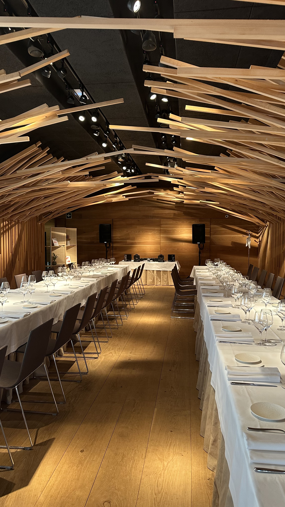

Hydrex Music ofrece servicio profesional de DJ para bodas en Vitoria-Gasteiz, Álava y País Vasco.
Cada boda es diferente y por eso la música se adapta completamente a los gustos de cada pareja, creando una experiencia única desde la ceremonia, el cóctel y la cena hasta la fiesta final.
Con más de 12 años de experiencia y más de 1000 eventos realizados, trabajo para que cada momento tenga la música adecuada y una puesta en escena profesional.
1. Hablamos sobre vuestra boda.
2. Preparo la música de cada momento.
3. Coordino los tiempos con vosotros.
4. Monto sonido e iluminación.
5. Me encargo de que la pista no pare.
✓ Cóctel
✓ Banquete
✓ Primer baile
✓ Fiesta final
¿Puedo elegir la música?
Sí, totalmente personalizada.
¿Incluye sonido e iluminación?
Sí, equipo profesional.
¿Trabajas fuera de Vitoria?
Sí, en todo el País Vasco y Norte de España.
Si estás organizando tu boda en Vitoria-Gasteiz o cualquier punto del País Vasco, estaré encantado de ayudarte.
Solicitar presupuesto